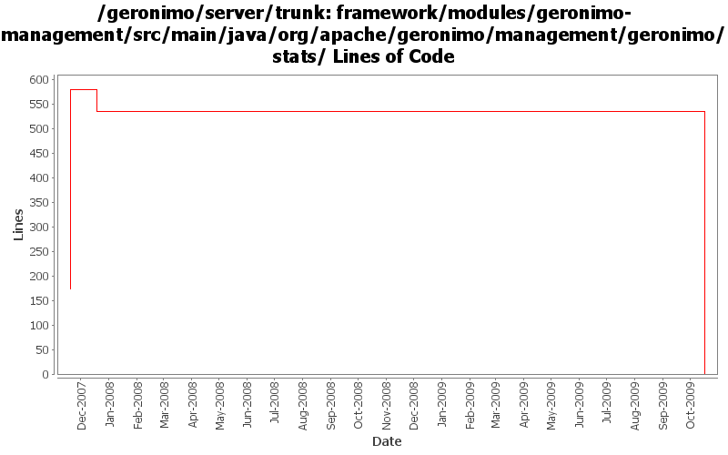

[root]/framework/modules/geronimo-management/src/main/java/org/apache/geronimo/management/geronimo/stats

| Author | Changes | Lines of Code | Lines per Change |
|---|---|---|---|
| Totals | 27 (100.0%) | 943 (100.0%) | 34.9 |
| djencks | 14 (51.9%) | 534 (56.6%) | 38.1 |
| akulshreshtha | 9 (33.3%) | 409 (43.4%) | 45.4 |
| kevan | 4 (14.8%) | 0 (0.0%) | 0.0 |
GERONIMO-4916 step 2 move sandbox osgi framework into trunk
534 lines of code changed in 7 files:
GERONIMO-4916 step 1 remove old framwork
0 lines of code changed in 7 files:
Fix old-style source license headers to use the current source license header format
0 lines of code changed in 4 files:
GERONIMO-3712 Include ConnectionsCount statistics in TimeStatistics named ConnectionsDuration.
JettyWebContainer : Include RequestCount statistics in TimeStatistics named RequestDuration.
Remove RequestDurationAverage
3 lines of code changed in 5 files:
GERONIMO-3608 Move Jetty*Stats and Jetty*StatsImpl to geronimo-management
406 lines of code changed in 4 files: